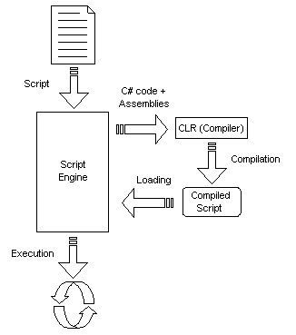

Architecture
CS-Script is a scripting system. This is how scripting (scripting language) is defined in Wikipedia:
Scripting languages are computer-programming languages designed for "scripting" the operation of a computer. Early script languages were often called batch languages or job control languages. A script is more usually interpreted than compiled, but not always.
In other words, starting point of a scripting application is a text file (script file) whereas with non-scripting application is a binary file (usually .exe).
CS-Script fits this definition very well. The language used for the CS-Script is a ECMA-compliant C#. The core component of CS-Script system is a script engine (cscs.exe/csws.exe). The script engine plays the role of an execution manager rather than an executor.

Basically, script execution looks like this: user runs the script engine application and specifies a script file to be executed (as a command-line parameter). The script file is just a file with C# code. Such code must have defined static method Main(...). The engine compiles the script into an assembly and executes a well-known entry point in this assembly: Main. Note: requirements to have static method Main(...) as the main entry point in assembly is the same as for any CLR application written in any CLR language.
CLR is a main worker during the script execution. It performs script compilation and also byte-code execution (preparation of the native CPU execution instructions).
This explains why the script engine does not require any changes when targeting a different CLR version . Thus originally script engine was build on and for .NET1.1. However it can successfully execute scripts under .NET2.0. This applies even for future versions of .NET. *In order to do effective development in CS-Scripts no extra programming knowledge is required but at least basic background in C#. This is because the script is just a C# code and the C# programming practice is applicable to script development as well. However there is a small set of formal requirements that should be met by C# code in order for to be qualified as a C# script.
The script engine comes in two forms: "WinForm" and console application (csws.exe and cscs.exe correspondingly). Depending on choice of the engine, the scripting application will be either a Windows or a console application.
The script engine can load the assemblies referenced within the code at execution time either implicitly or explicitly (see Using .NET assemblies).
In order to run a script you need either to install CS-Script or just have thew script engine file only. This is the essence of deployment requirements (see Deployment).
The lightest development toolset is a text editor (eg. Notepad.exe), however most common IDEs offer more convenient development environment (see Development tools).
Performance
The script engine demonstrates remarkable performance. C# script execution is the execution of the CLR applications by nature. That is why there is no difference between the run-time performance of the C# script and the standalone executable equivalent. The only difference is the time required for the script to be compiled and loaded, however this may be required only at startup and does not contribute into run-time performance at all.
Also, the startup delay itself is very insignificant under normal
conditions. The measurement of the startup delay for script executed in
a cashed mode (with '/c' switch)
on the average PC (P4 2.8GHz 1G of RAM) shows about 45-60 ms overhead
compared to a standalone executable equivalent. Thus the measured
execution time for the standard hello.cs script was consistently around
110 ms.
In other words, the script application will take a bit longer to start (about 50 ms) but will perform with the same speed as it's standalone executable equivalent.
Note: performance figures may vary from version to version.Programming Reference | Command-line Interface | Extending scripting system